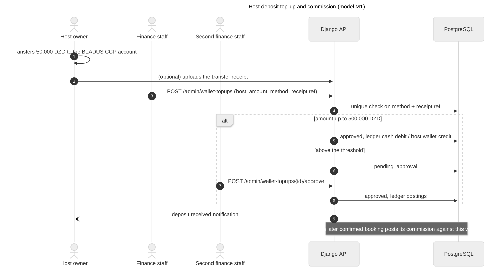
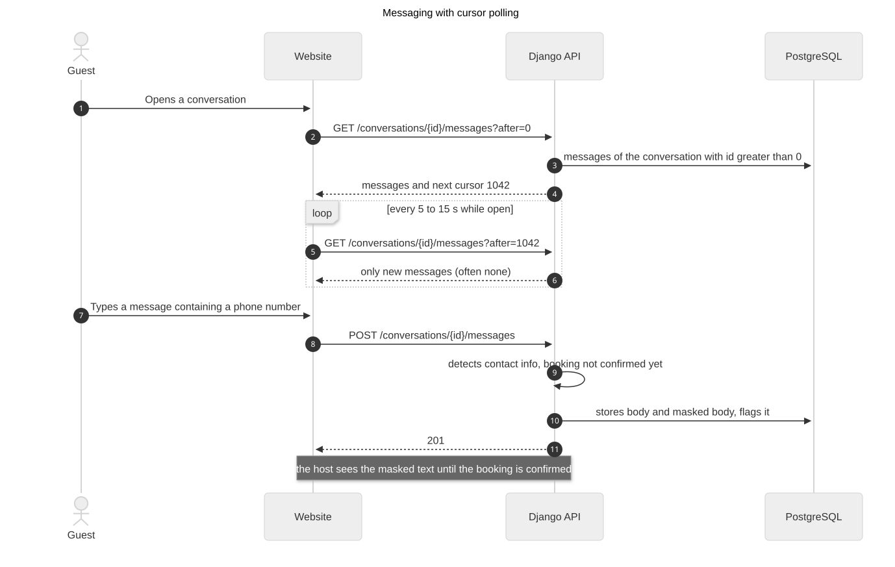

Diagram gallery
In plain words
Every diagram of the blueprint, embedded as a picture with its caption.
How to read each kind of diagram is explained in the legend on the previous page.
01-system-context

Who uses BLADUS and which outside services it talks to. Guests and hosts use the website, staff use the admin app; both call one Django API. The payment gateway is dotted because online payment comes in release R2.
02-containers

What runs where. Everything holding personal data runs in Algerian data centres (research C.3, to be confirmed by a lawyer). The Next.js servers keep the login cookie and call Django on the browser's behalf (BFF). Workers send messages and run timed jobs.
03-django-apps

The backend is one application split into 17 apps plus a small core, arranged in layers. An app may only use apps in lower layers (checked automatically by import-linter); for example bookings may use pricing and the ledger, never the reverse. Events (emails, search refresh) go through the outbox instead of direct calls. Details in 07-architecture.md.
30-money-flow

Where money goes. At launch (M1) the guest pays the host, the host keeps a deposit at BLADUS, and BLADUS takes its commission from that deposit. M4 (BLADUS collects and pays out) is drawn for later and needs a licence.
40-document-map

How the blueprint documents feed each other, from inventory to tests.
10-booking-states

Every status a booking can have. A request waits up to 24 hours for the host; a confirmed booking becomes completed automatically after check-out. awaiting_payment stays unused until online payment exists. Rules BR-BKG-01 to 07.
11-listing-states

A listing or trip is checked by staff before it is published (DEC-003). Hosts can pause; staff can suspend or ask for changes. Deleting is reversible by staff.
12-host-verification-states

A host (person or organisation) is approved only when all required documents are approved. Changing legal details sends it back to review.
13-review-states

A review is written after a completed stay, published when both sides wrote or after 14 days, and can be hidden after a report.
20-seq-instant-booking

An instant booking from price quote to confirmation in one database transaction; the database itself refuses overlapping dates; the commission is posted to the host's wallet; messages go out after the save.
21-seq-request-to-book

A request: the host accepts, declines, or a timed job expires it after 24 hours. Dates stay blocked while it waits.
22-seq-wallet-topup

A host tops up the commission deposit by transfer; finance records it with the receipt reference; large amounts need a second person.
23-seq-host-onboarding

Becoming a host: the steps come from the published configuration, the draft is saved on the server, documents go to private storage, staff verify.
24-seq-message-sync

Messages are fetched with a cursor so polling is cheap; phone numbers are masked until a booking is confirmed (anti-fraud).
erd-00-overview

The 26 central tables and their main links. Start here. host_account sits between people and organisations on one side and listings, trips and wallets on the other.
erd-01-accounts

People, staff roles and permissions, consents, favourites.
erd-02-geography

69 wilayas, dairas and 1,541 communes.
erd-03-host-accounts-and-organisations

Host accounts, organisations, team members, invitations, verification documents, payout accounts.
erd-04-taxonomy

Shared lists: categories, property types, amenities, cancellation policies.
erd-05-catalogue-listings-and-room-types

Listings, edits under review, vehicle and experience details, room types, photos, featured places.
erd-06-inventory-and-calendar

What is free per day (homes, vehicles), per night and room type (hotels, hostels) and per time slot (experiences).
erd-07-trips-agency-only

Agency trips, day-by-day itinerary, dated departures with seats.
erd-08-pricing

Price quotes and tax rates.
erd-09-bookings

Bookings, their status history, refunds owed, disputes.
erd-10-money-ledger-wallet-dormant-payments

The ledger, balances, deposit top-ups, gateway webhooks, and the tables kept unused until the money model changes.
erd-11-reviews

Reviews, replies, reports.
erd-12-messaging-and-notifications

Conversations, messages, notifications, preferences, the outbox and delivery log.
erd-13-media

Uploaded files (public photos, private documents).
erd-14-moderation-config-audit-privacy-system

Staff queues and decisions, settings and onboarding versions, coupons, audit log, exports, privacy requests, idempotency, search table.